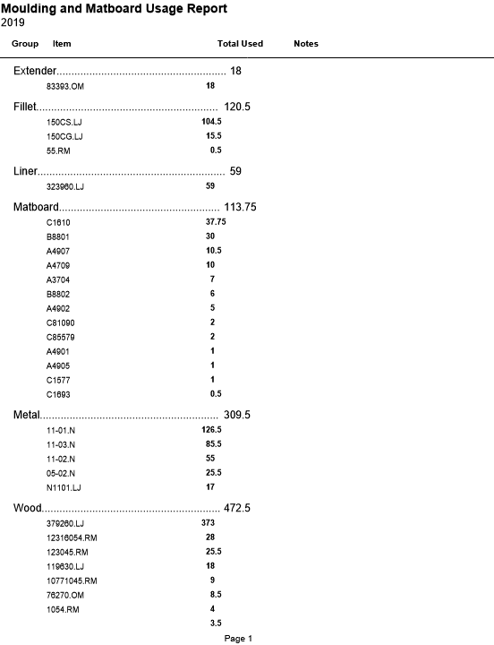
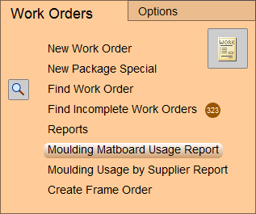
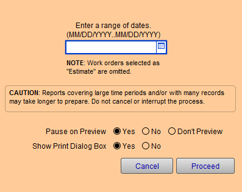

Moulding/Matboard Usage Report
This document shows totals by group and quantity of specific items used for any time period.
-
Matboard is calculated to quarter sheet.
-
Moulding is rounded up to nearest half foot.
-
Estimates are not included in report.
-
Work Orders on Hold (radio button) are included.
Example Print

How to Print a Moulding Matboard Usage Report
Caution: If you exclude a date and have a great many Work Orders, the report may take considerable time to generate (FrameReady has to load in and examine each individual Work Order). You may want to wait until after hours so as not to tie up your FrameReady program.
-
On the Main Menu, in the Work Orders section, click the Moulding Matboard Usage Report button.

-
A date-range dialog appears.

-
Enter a Date or Date range if you wish.
See: Find a Date Range
If you exclude a date and have a great many Work Orders, then the report may take a long time to generate. -
Click the Proceed button.
-
A print preview of the document appears.
Click Continue or Save as PDF.
Items Without a Group
-
If, at the bottom of the report, there are a number of items listed that have no category, then it is very likely these items were manually added onto a Work Order but were also not found in the Price Codes file.
-
This means FrameReady has no information about which Group it belongs to.
How to Print a Moulding Matboard Usage Report using a Found Set
-
Perform a find, in the Work Orders file, to get the Found Set you want to work with.
-
Click the Print Documents button.
-
Click the Moulding Matboard Usage Report button.
-
Because you have a Found Set, this button will use it to generate the report.
© 2023 Adatasol, Inc.